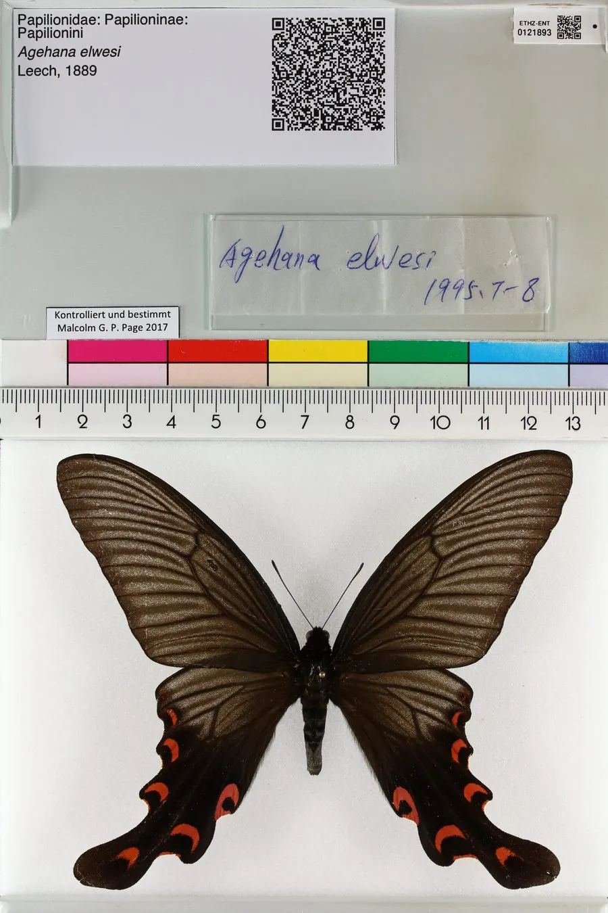

昆虫 · 动物界
宽尾凤蝶 Agehana elwesi

中国特有的珍稀凤蝶，后翅尾突特别宽大，翅面黑色带白色斑纹，幼虫取食鹅掌楸等木兰科植物，数量稀少。
- 分类
- 门节肢动物门纲昆虫纲目鳞翅目科凤蝶科属宽尾凤蝶属
- 栖息环境
- 山地常绿阔叶林和林缘，寄主鹅掌楸生长的地方
- 地理分布
- 中国浙江、福建、江西、湖南、广东等南方山区
- 保护级别
- 暂无评估；中国国家重点保护野生动物
物种志
宽尾凤蝶翅展约 10–12 cm，翅面黑褐色，前翅和后翅有若干白色斑块，最显著的特征是后翅的尾突非常宽大，像一把小扇子，因此得名。雌蝶体型略大，白色斑纹更发达，雄蝶斑纹相对较小。
它生活在山地常绿阔叶林和林缘，成虫在春季到夏季出现，飞行优雅，喜欢访花。雌蝶把卵产在鹅掌楸等木兰科植物的叶片上，幼虫取食叶片，化蛹后以蛹越冬。宽尾凤蝶是中国特有种，分布于中国南方部分山区，种群数量稀少，对生境要求较高，栖息地破坏和非法采集是其面临的主要威胁，被列为国家重点保护野生动物。它的成虫寿命较短，羽化后主要任务是交配产卵，之后很快死亡。
形态与习性
- 食性幼虫取食鹅掌楸等木兰科植物叶片；成虫吸蜜
- 翅展约 10–12 cm
- 识别后翅尾突特别宽大，翅面黑色带白斑
- 生活史一年发生一代或多代，以蛹越冬
- 保护中国特有种，种群稀少，受重点保护
趣味知识
- 宽尾凤蝶的尾突又宽又大，是凤蝶中少见的形态。
- 它是中国特有种，分布范围窄，野外数量稀少。
- 幼虫只吃鹅掌楸等木兰科植物，因此依赖特定森林环境。